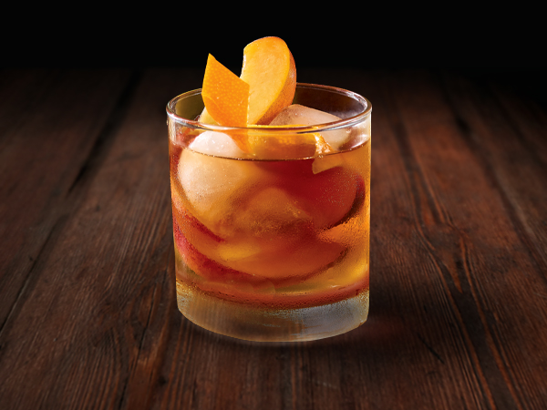

As the name suggests, Old-Fashioned is a very old cocktail made with bourbon or whiskey, fine sugar or a sugar cube, Angostura bitters, Maraschino cherries, orange slices, and a splash of club soda or water. The cocktail is prepared by muddling the bitters, sugar, cherries, an orange slice, and soda or water in an old-fashioned glass.
Meal prep time : 5 minutes
Servings : 1